Transmission Removal
Transmission RemovalSpecial Tools Required
^ Engine hanger/adapter VSB02C000015
^ 2006 Civic engine hanger VSB02C000025
^ Engine support hanger, A & Reds AAR-T-12566
^ Subframe adapter VSB02C000016
These special tools are available through the Honda Tool and Equipment Program 1-888-4246857.
NOTE: Use fender covers to avoid damaging painted surfaces.
1. Make sure you have the anti-theft code for the audio unit or the navigation system, then write down the audio presets.
2. Disconnect the negative cable from the battery, then disconnect the positive cable.
3. Remove the battery.
4. Remove the cowl cover and under-cowl panel.
5. Remove the air cleaner assembly.
6. Remove the harness clips (A) and the intake air duct (B), then remove the battery base (C) with the coolant reservoir (D).
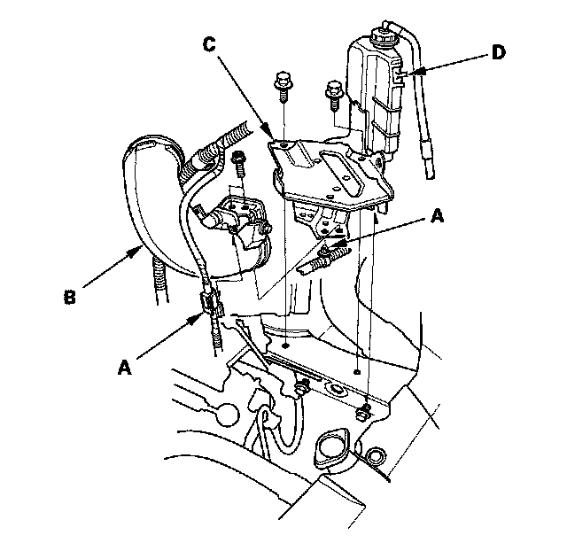
7. Remove the clutch line bracket (A), then carefully remove the slave cylinder (B) to avoid bending the clutch line.
NOTE: Do not press the clutch pedal after the slave cylinder has been removed.
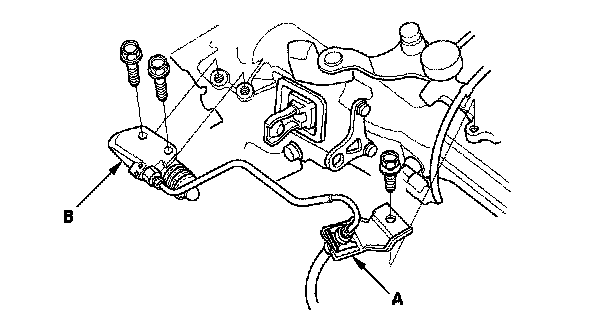
8. Disconnect the back-up light switch connector (A), the output shaft (countershaft) speed sensor connector (B), the reverse lockout solenoid connector (C), and the harness clips (D).
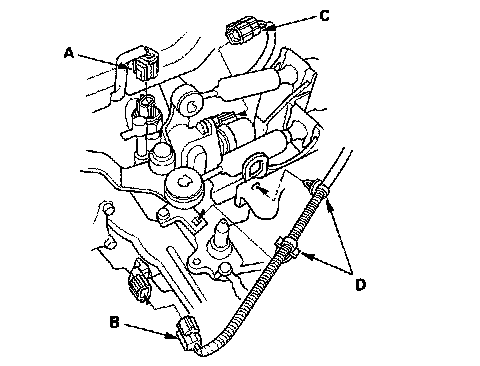
9. Remove the cable bracket (A), then disconnect the cables (B) from the top of the transmission housing. Carefully remove both cables and the bracket together to avoid bending the cables.
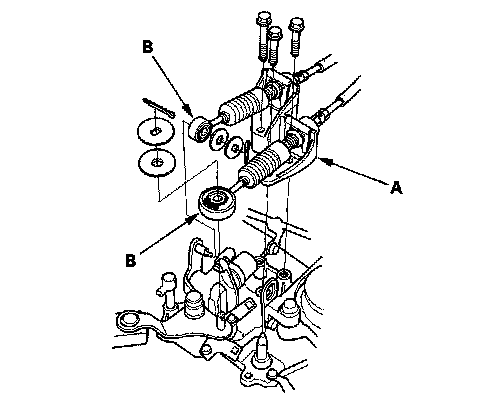
10. Remove the harness clips (A) from the clutch cable bracket (B) and harness bracket (C).
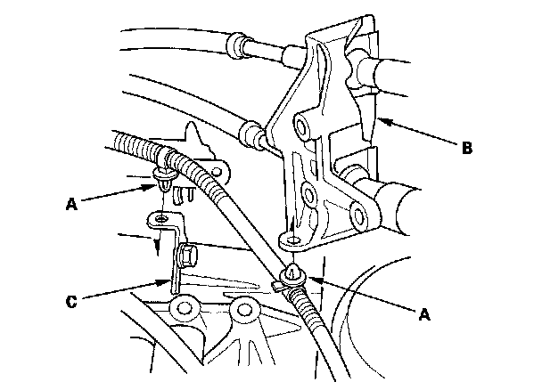
11. Remove the air cleaner housing bracket (A).
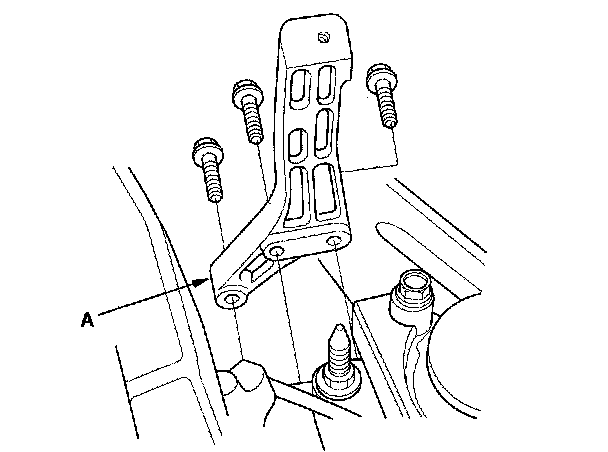
12. Remove the engine wire harness cover (A) by lifting up on the lock tab (B), then slide the harness forward off the air cleaner housing mounting bracket (C).
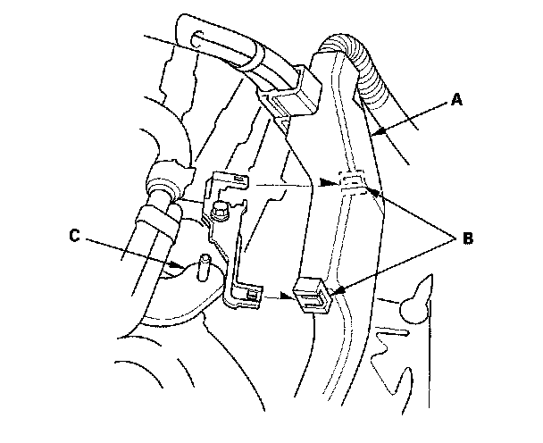
13. Attach the engine hanger (A) to the threaded holes in the cylinder head.
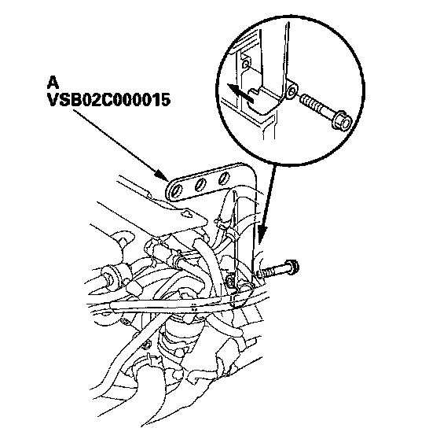
14. Install the front leg assembly (A), hook (B), and wingnut (C) from an A and Reds engine support hanger (AAR-T-12566) onto the engine hanger. Carefully position the engine hanger on the vehicle, and attach the hook to the forward hole in the engine hanger/adapter (D). Tighten the wingnut by hand to lift and support the engine/transmission assembly.
NOTE: Use care when working around the windshield.
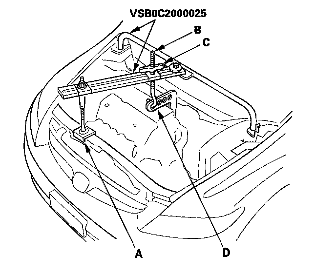
15. Remove the two upper transmission mounting bolts.
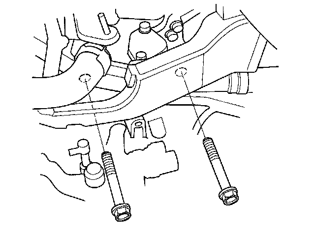
16. Remove the under-hood fuse/relay box (A) by lifting up on the lock tab (B), then move it aside.
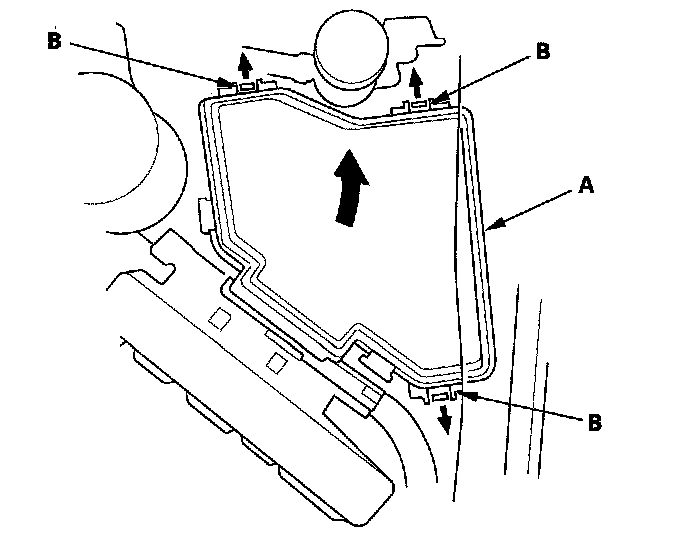
17. Remove the engine control module (ECM) stay (A), then move it aside. Remove the clutch line clamp (B).
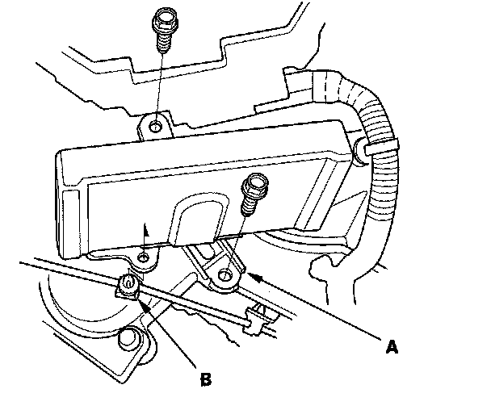
18. Disconnect the ground cable (A), then remove the transmission mount bracket bolts (B) and nuts (C). Remove the transmission mount bracket (D).
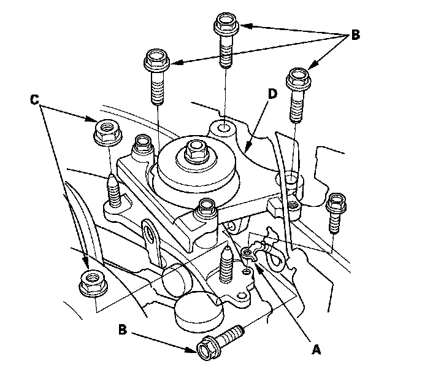
19. Raise the vehicle on the lift.
20. Remove the splash shield.
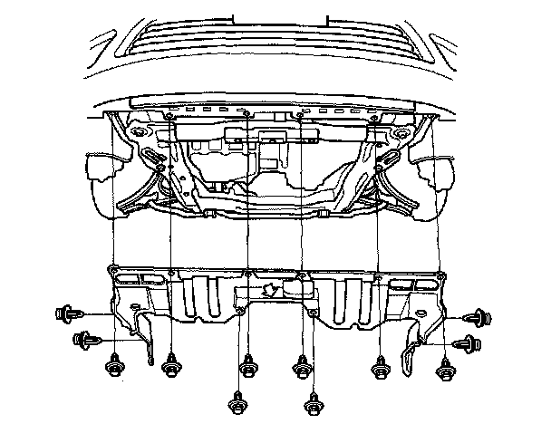
21. Drain the transmission fluid. Reinstall the drain plug with a new washer.
22. Separate the lower arm.
23. Remove the stiffner plate (A) and mounting bracket (B) from the steering gearbox. Disconnect the exhaust mounting rubber (C).
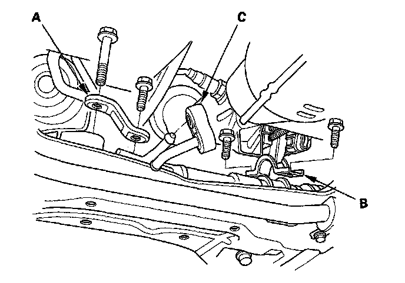
24. Remove the stiffner plate (A) and harness clip (B).
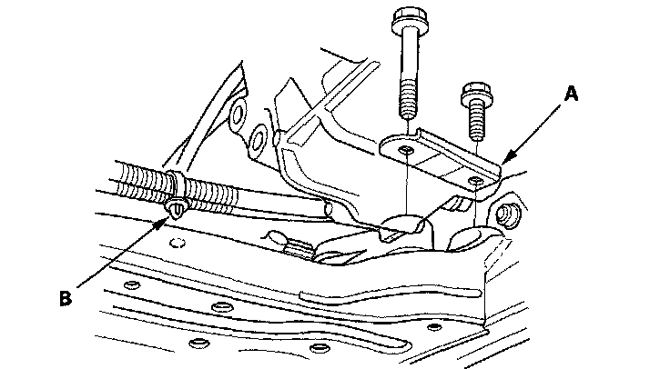
25. Remove the front engine mount bracket mounting bolt (A) and nut (B) then, remove the lower radiator hose from the front engine mount bracket.
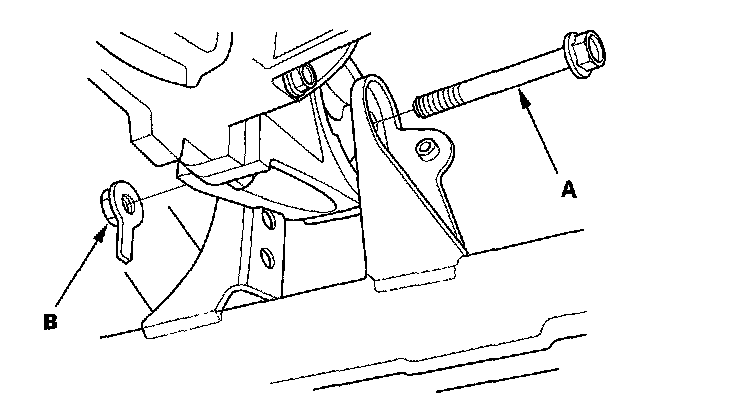
26. Remove the front engine mount bracket (A) from the transmission and engine.
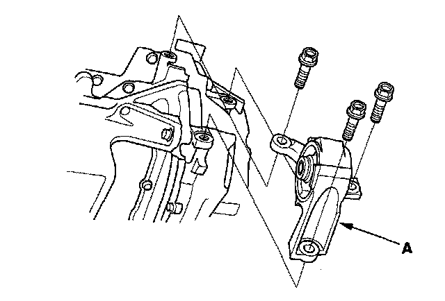
27. Remove the rear engine mount bracket mounting bolt.
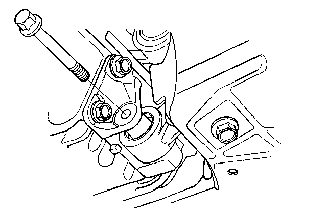
28. Remove the middle subframe mounting bolts (A).
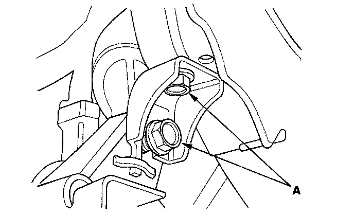
29. Note the reference marks (A) on both sides of the subframe that lines up with the body (B).
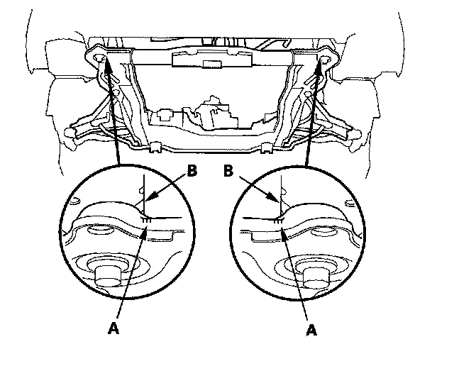
30. Attach the front subframe adapter to the front subframe by wrapping the band over the front subframe and attaching the end of the band to the front subframe adapter with the pin (A).
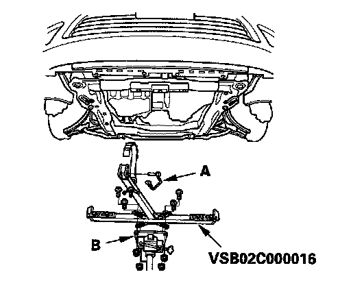
31. Raise the jack, and line up the slots in the arms with the bolt holes on the corner of the jack base (B), then attach them securely.
32. Remove the front subframe mounting bolts (A) and front subframe (B).
NOTE: Suspend the steering gearbox with an appropriate size wire.
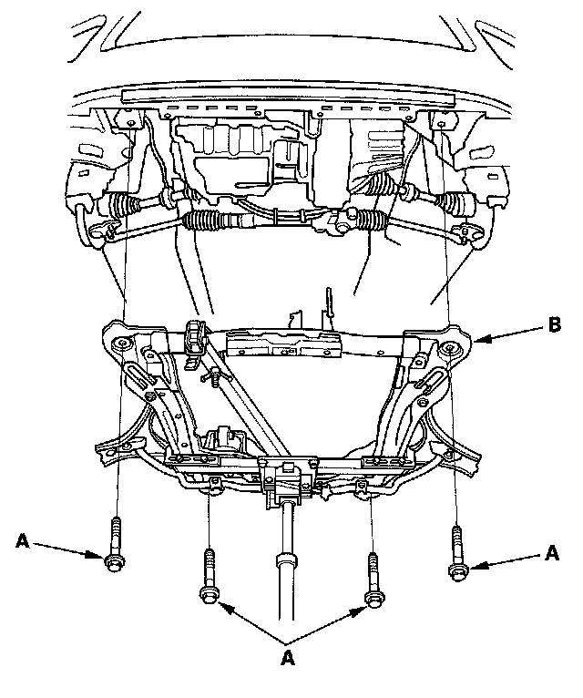
33. Pry out the driveshafts inboard joint.
34. Remove the intermediate shaft.
35. Remove the clutch cover.
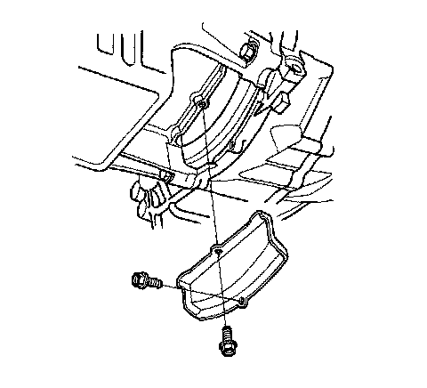
36. Support the transmission with the transmission jack.
37. Remove the transmission mounting bolts.
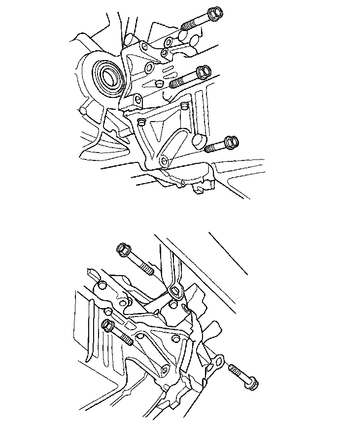
38. Pull the transmission away from the-engine until the transmission mainshaft clears the clutch pressure plate.
39. Slowly lower the transmission about 150 mm (6 in). Check once again that all hoses and electrical wiring are disconnected and free from the transmission, then lower it all the way.
40. Remove the release fork boot (A) from the clutch housing (B).
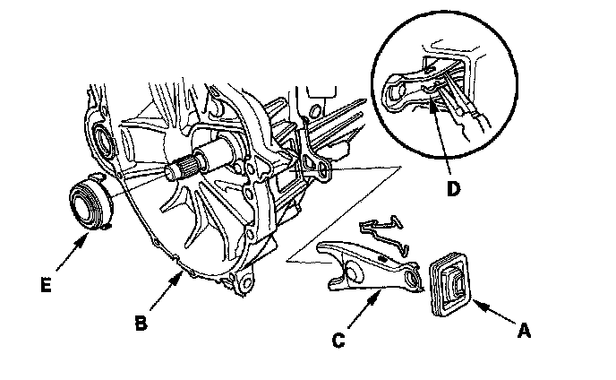
41. Remove the release fork (C) from the clutch housing by squeezing the release fork set spring (D) with pliers. Remove the release bearing (E).